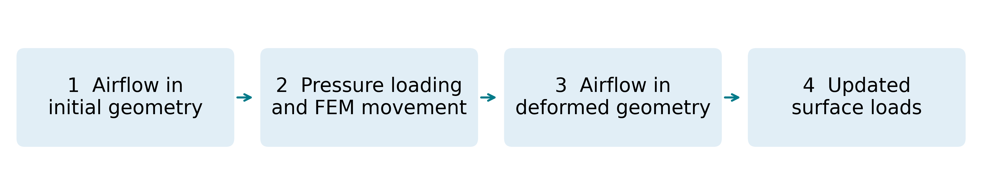
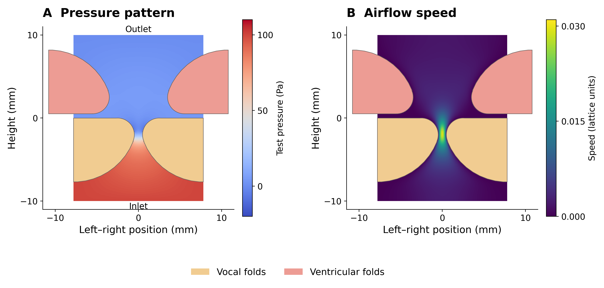
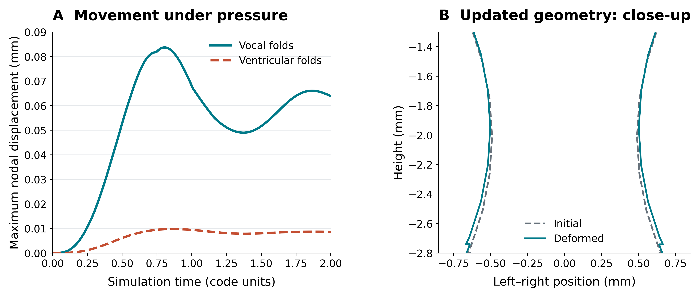
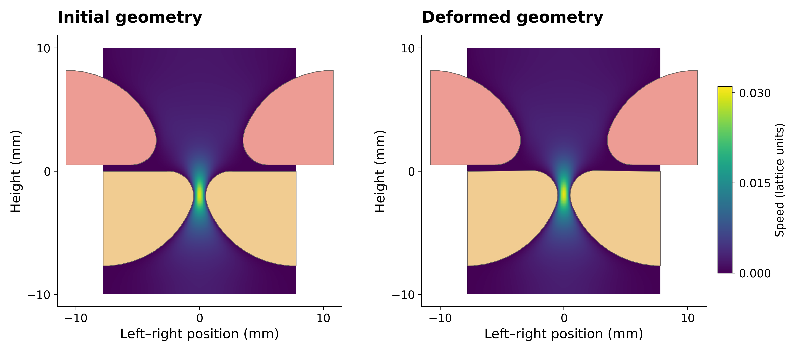
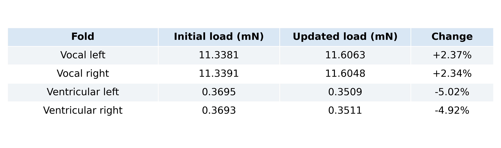

MaTiPS 2026 Poster supplement
Towards Fluid–Structure Interaction Modelling of Vocal–Ventricular Fold Coupling in ArtiSynth Using the Lattice Boltzmann Method
Division of Linguistics and Multilingual Studies
Nanyang Technological University, Singapore
Airflow in motion
Figure 1BScreen recording to be added
The initial LBM airflow run.
The staged update

1. Initial pressure and airflow
Figure 1
2. Pressure-driven fold movement
Figure 2
3. Airflow after the geometry update

4. Updated surface loads
Table 1
Exploratory staged tests: developing airflow and a chosen loading scale. This sequence does not demonstrate continuous FSI or self-sustained oscillation.